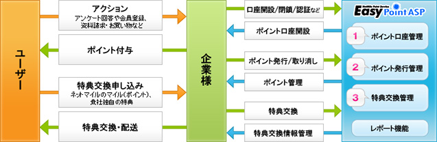

プレスリリース
2008年9月30日
株式会社ネットマイル
ポイントシステム貸し出します！
～ ネットマイル社、簡単・低コスト・スピーディなポイントシステムASPを構築 ～
インターネット上の共通ポイントプログラムを運営する株式会社ネットマイル（本社：東京都千代田区、代表取締役社長：山本 雅、以下、ネットマイル社）は、独自ポイント支援サービス『ネットマイル EasyポイントASP』の提供を、本日2008年9月30日（火）より開始いたします。
『ネットマイル EasyポイントASP』とは、企業の独自ポイントシステムの構築・運用を支援するシステムソリューションサービスです。インターネットを通じてソフトウエアを提供するため、システム開発やサーバーを設置する必要がなく、企業単独でのポイントプログラム導入に比べ、簡単かつ低コストなプログラム導入が可能となり、導入申し込み後、最短3日でサービスが開始できます。
情報漏えい等に対しても、高度なレベルのセキュリティシステムで万全な対策を行っております。
ネットマイル社では、2009年度末までに50社への『ネットマイル EasyポイントASP』の導入を目指します。
■ 『ネットマイル EasyポイントASP』 サービス概要
| サービス名 | ネットマイル EasyポイントASP |
|---|---|
| サービス開始日 | 2008年9月30日（火） |
| 概要 | ■『ネットマイル EasyポイントASP』にできること
|
| URL | http://biz.netmile.co.jp/service/easypoint/ |
■ 『ネットマイル EasyポイントASP』 サービス概要図
【株式会社ネットマイルについて】
http://www.netmile.co.jp/
2000年11月設立。三井物産株式会社の連結子会社で、インターネット上の共通ポイントプログラム「ネットマイル」を運営。同社のIT事業戦略の一端を担う。
「ネットマイル」は、2001年4月にサービスを開始。累計加盟サイト数1,000サイト、累計登録会員数約392万人（2008年8月末現在）の規模は、日本最大級。 2007年12月、インターネット業界最大規模のオンラインイベントである『 Web of the Year 2007 』ポイント部門で第1位に選ばれる。
| 社名 | 株式会社ネットマイル |
|---|---|
| 代表取締役社長 | 山本 雅 |
| 所在地 | 〒101-0054 東京都千代田区神田錦町3-26 一ツ橋 SIビル 9F |
| 資本金 | 396百万円 |
| 設立 | 2000年11月7日 |
| 事業内容 | 1 ： インターネット市場におけるユニバーサルポイントプログラム「ネットマイル」のサービスを運営 2 ： ネットマイル会員を活用した、大規模ネットリサーチの運営 |
| 出資企業 | 三井物産株式会社、トランスコスモス株式会社 他 |
＜当リリースに関する報道関係者お問い合わせ先＞
株式会社ネットマイル 広報担当 ： 江澤・村井
Email ： 
TEL ：